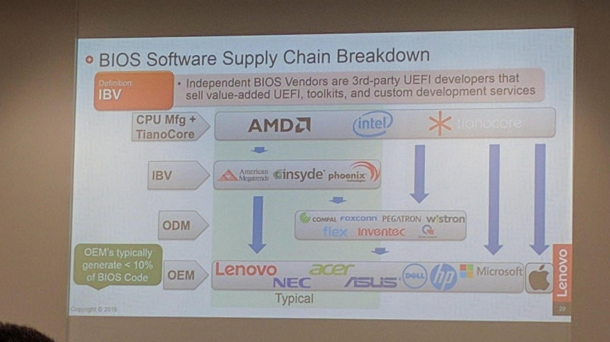
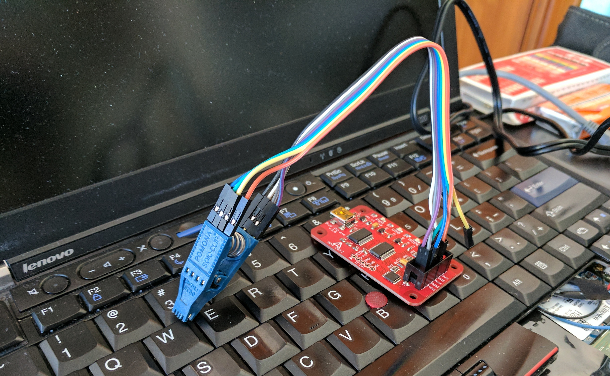
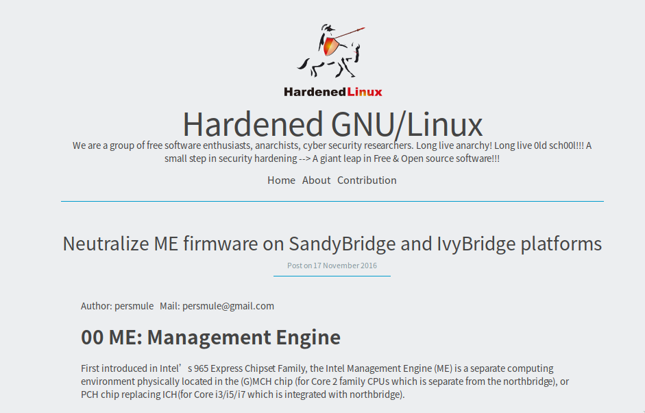
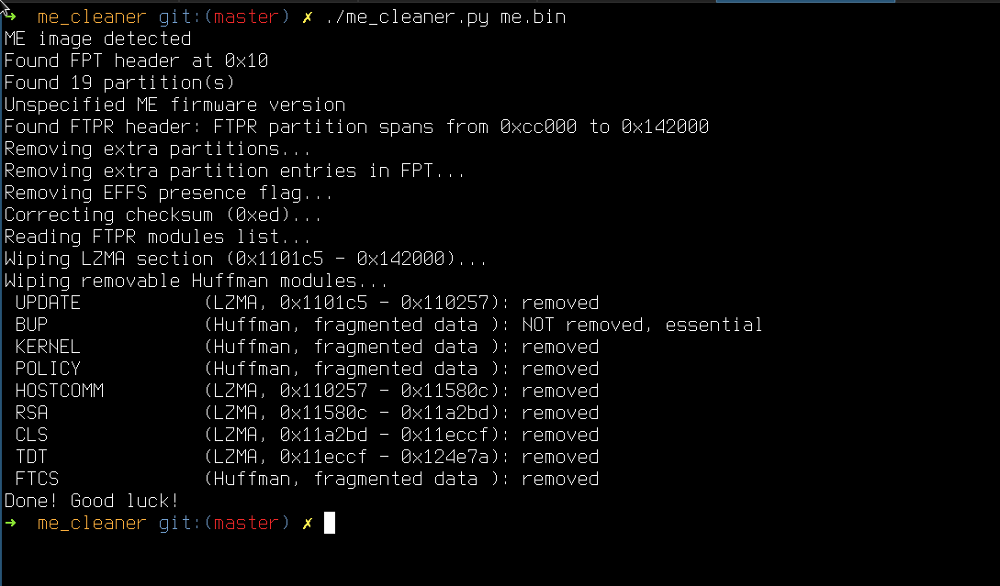

Patrick O'Doherty
Created: 2017-01-26 Thu 20:16
Coreboot and you
What
Coreboot (formerly LinuxBIOS) is a FOSS replacement for your BIOS/UEFI
Why
Security
Vendors suck at shipping security patches
layered vendor ecosystem makes this suck even more 
Your BIOS likely likely has unpatched exploits
The trusted computing base is yuuuuuuuuuuuuge
Flexibility!
Ever wanted to yak shave your BIOS??!? Now you can!!!

Multiple payload options
SeaBIOS
Minimal legacy BIOS
Bake Linux into your BIOS!
2017: The year of Linux on the (laptop) BIOS
GRUB2
Perma-GRUB
Freedom
Greater control over the software you run
The 4 freedoms for your BIOS
- to run the program as you wish, for any purpose
- to study how the program works
- to redistribute copies so you can help your neighbor
- to distribute copies of your modified versions to others
That's cool! What do I need?
Prepare to void your warranty
Get some old thinkpad hardware
Thinkpad X200, X201, X220, X230 all have great support
A Pomona clip

Some SPI flashing hardware
I've used a BusPirate successfully, others have tried raspberry pis, beaglebones
Caveats
It's super finicky
This took me 3 days to get working
Make the wires shorter
Anything over 6 inches between chip & SPI flasher will cause issues w/ interference
Make the wires shorter again
Seriously, it's super important
Buy a power supply
The EEPROM needs power, and your 3.3V supply from the Pi or Beaglebone is unlikely to be enough
… or use WoL trickery
- Take the battery out
- Plug in the AC adapter
- Boot the machine and power it off
- Plug in a connected (link) ethernet cable
- Observe that the link light blinks & the board is powered!
- Don't ever connect the 3.3V source and the AC adapter at the same time
Bonus round: Control the big bad ME!
The Intel ME
An entirely separte co-processor within your CPU that you don't control.
The bad
Has Direct Memory Access, its own network interface and much much more
The ugly
- Has vulnerabilities!
- Answers to Intel only
- Since the SandyBridge generation ME also required for CPU initialization
- Without a functioning ME your machine will shutdown after 30 minutes
- You can't just zero it out
The free

Sweet liberation

Next steps: heads
a minimal Linux based payload that provides a secure, flexible boot environment
github.com/osresearch/heads
Watch the talk